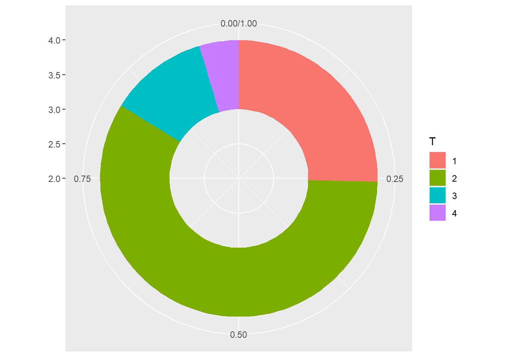
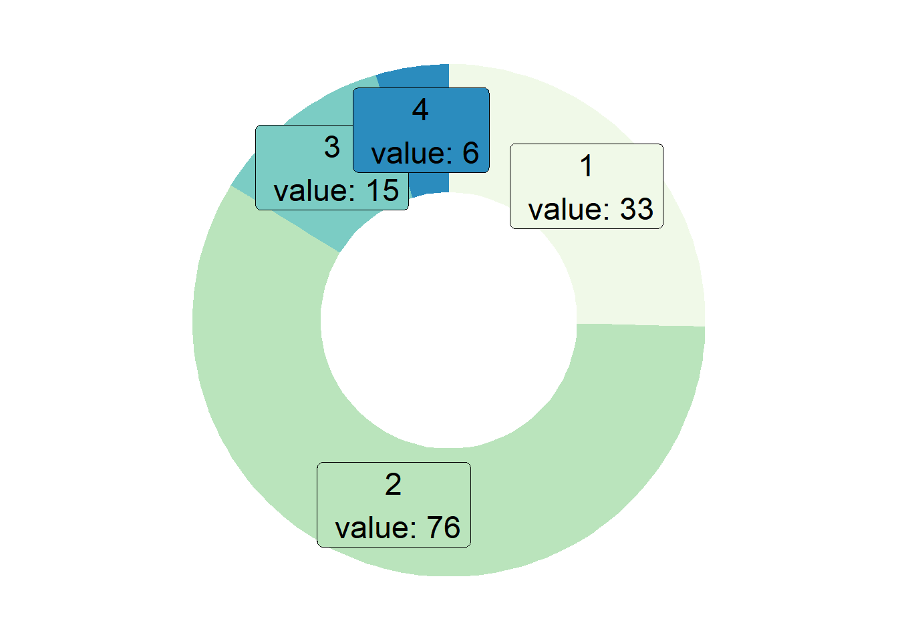
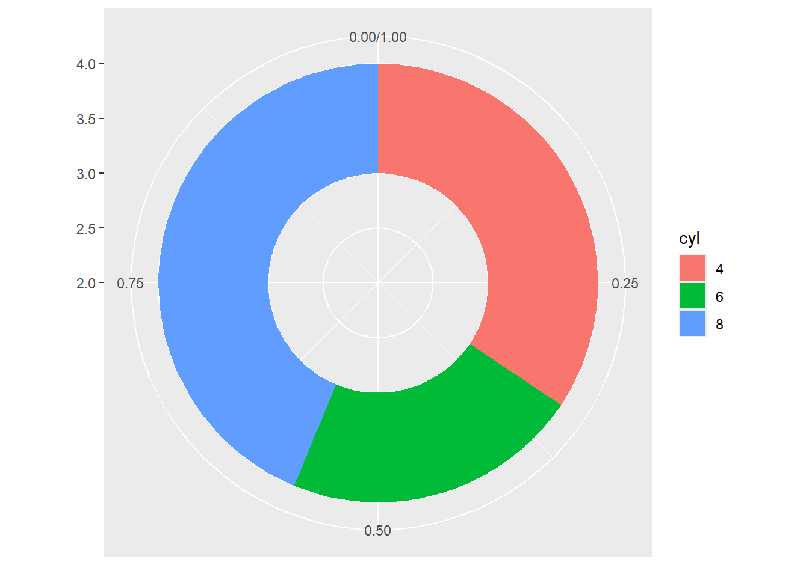
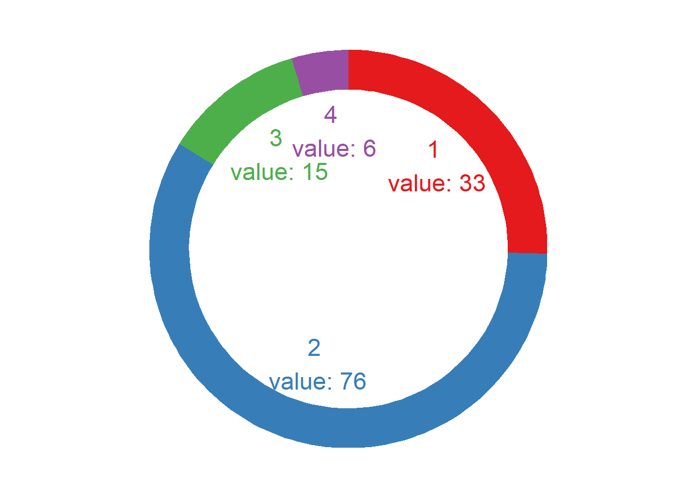
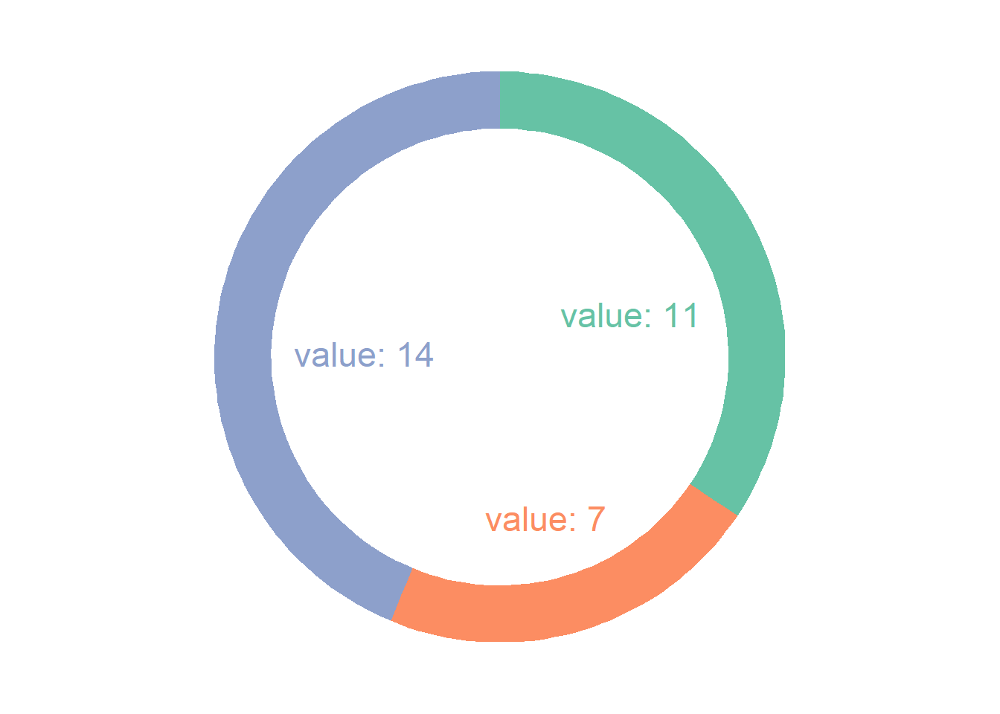

# 安装包
if (!requireNamespace("ggplot2", quietly = TRUE)) {
install.packages("ggplot2")
}
# 加载包
library(ggplot2)环状图
环状图是一个被分成若干扇区的圆环，每个扇区代表整体的一部分。它与饼图非常相似，可以在ggplot2和基础R中构建这种图形。
示例

环境配置
系统要求： 跨平台（Linux/MacOS/Windows）
编程语言：R
依赖包：
ggplot2
sessioninfo::session_info("attached")Warning in system2("quarto", "-V", stdout = TRUE, env = paste0("TMPDIR=", :
running command '"quarto"
TMPDIR=C:/Users/97539/AppData/Local/Temp/RtmpsVpXdN/file67783ca9750d -V' had
status 1─ Session info ───────────────────────────────────────────────────────────────
setting value
version R version 4.5.1 (2025-06-13 ucrt)
os Windows 11 x64 (build 22631)
system x86_64, mingw32
ui RTerm
language (EN)
collate Chinese (Simplified)_China.utf8
ctype Chinese (Simplified)_China.utf8
tz Asia/Shanghai
date 2026-05-10
pandoc 3.9.0.2 @ D:/Program/PANDOC~1.2/ (via rmarkdown)
quarto NA @ D:\\Program Files\\R\\RStudio\\RESOUR~1\\app\\bin\\quarto\\bin\\quarto.exe
─ Packages ───────────────────────────────────────────────────────────────────
package * version date (UTC) lib source
ggplot2 * 4.0.2 2026-02-03 [1] CRAN (R 4.5.2)
[1] D:/Program Files/R/R-4.5.1/library
* ── Packages attached to the search path.
──────────────────────────────────────────────────────────────────────────────数据准备
主要运用TCGA数据库和R内置数据集mtcars。
# 1.TCGA数据库（2020年肺癌的临床数据）
TCGA_cli_df <- readr::read_tsv("https://bizard-1301043367.cos.ap-guangzhou.myqcloud.com/raponi2006_public_raponi2006_public_clinicalMatrix.gz")
# 2.R内置的data——mtcars
head(mtcars) mpg cyl disp hp drat wt qsec vs am gear carb
Mazda RX4 21.0 6 160 110 3.90 2.620 16.46 0 1 4 4
Mazda RX4 Wag 21.0 6 160 110 3.90 2.875 17.02 0 1 4 4
Datsun 710 22.8 4 108 93 3.85 2.320 18.61 1 1 4 1
Hornet 4 Drive 21.4 6 258 110 3.08 3.215 19.44 1 0 3 1
Hornet Sportabout 18.7 8 360 175 3.15 3.440 17.02 0 0 3 2
Valiant 18.1 6 225 105 2.76 3.460 20.22 1 0 3 1可视化
1. 基本绘图
1.1 以TCGA数据为例
# 数据准备
counts <- table(TCGA_cli_df$T)
counts <- as.data.frame(counts)
names(counts)[names(counts) == "Var1"] <- "T"
# 计算百分比
counts$fraction = counts$Freq / sum(counts$Freq)
# 计算累积百分比（每个矩形顶部的数值）
counts$ymax = cumsum(counts$fraction)
# 计算每个矩形的底部，确定起始位置
counts$ymin = c(0, head(counts$ymax, n=-1))
# 画图
p <- ggplot(counts, aes(ymax=ymax, ymin=ymin, xmax=4, xmin=3, fill=T)) +
geom_rect() +
coord_polar(theta="y") +
xlim(c(2, 4))
p
这个环状图描述了不同肿瘤分期在总样本中所占的比例。
1.2 美化图形
- 使用
theme_void()来消除不必要的背景、坐标轴、标签等。 - 改变颜色。
- 不要使用图例，直接给分组添加标签。
# 计算百分比
counts$fraction = counts$Freq / sum(counts$Freq)
# 计算累积百分比（每个矩形顶部的数值）
counts$ymax = cumsum(counts$fraction)
# 计算每个矩形的底部，确定起始位置
counts$ymin = c(0, head(counts$ymax, n=-1))
# 计算标签位置
counts$labelPosition <- (counts$ymax + counts$ymin) / 2
# 标签名字
counts$label <- paste0(counts$T, "\n value: ", counts$Freq)
# 画图
p <- ggplot(counts, aes(ymax=ymax, ymin=ymin, xmax=4, xmin=3, fill=T)) +
geom_rect() +
geom_label( x=3.5, aes(y=labelPosition, label=label), size=6) + #这一行代码可以控制标签在图表中的添加，去除可以删除标签
scale_fill_brewer(palette=4) +
coord_polar(theta="y") +
xlim(c(2, 4)) +
theme_void() +
theme(legend.position = "none")
p
这个环状图描述了不同肿瘤分期在总样本中所占的比例。
1.3 以mtcars数据为例
# 数据准备
counts1 <- table(mtcars$cyl)
counts1 <- as.data.frame(counts1)
names(counts1)[names(counts1) == "Var1"] <- "cyl"
# 计算百分比
counts1$fraction = counts1$Freq / sum(counts1$Freq)
# 计算累积百分比（每个矩形顶部的数值）
counts1$ymax = cumsum(counts1$fraction)
# 计算每个矩形的底部，确定起始位置
counts1$ymin = c(0, head(counts1$ymax, n=-1))
# 计算标签位置
counts1$labelPosition <- (counts1$ymax + counts1$ymin) / 2
# 标签名字
counts1$label <- paste0(counts1$T, "\n value: ", counts1$Freq)
# 画图
p <- ggplot(counts1, aes(ymax=ymax, ymin=ymin, xmax=4, xmin=3, fill=cyl)) +
geom_rect() +
coord_polar(theta="y") +
xlim(c(2, 4))
p
这个环状图描述了不同气缸数在总样本中所占的比例。
2. 改变环的厚度
- 如果
xlim的左边界很大，就不会出现空圈。你会得到一个饼图。 - 如果
xlim较低，环会变得更薄。
2.1 以TCGA数据为例
p <- ggplot(counts, aes(ymax=ymax, ymin=ymin, xmax=4, xmin=3, fill=T)) +
geom_rect() +
geom_text( x=2, aes(y=labelPosition, label=label, color=T), size=6) + # X在这是控制标签位置
scale_fill_brewer(palette="Set1") +
scale_color_brewer(palette="Set1") +
coord_polar(theta="y") +
xlim(c(-1, 4)) +
theme_void() +
theme(legend.position = "none")
p
这个环状图描述了不同肿瘤分期在总样本中所占的比例。
2.2 以mtcars数据为例
p <- ggplot(counts1, aes(ymax=ymax, ymin=ymin, xmax=4, xmin=3, fill=cyl)) +
geom_rect() +
geom_text( x=1.5, aes(y=labelPosition, label=label, color=cyl), size=6) + # X在这是控制标签位置在环里面还是外面
scale_fill_brewer(palette="Set2") +
scale_color_brewer(palette="Set2") +
coord_polar(theta="y") +
xlim(c(-1, 4)) +
theme_void() +
theme(legend.position = "none")
p
这个环状图描述了不同气缸数在总样本中所占的比例。
应用场景

这个环状图显示了人海马 scRNA-seq 数据集群之间的分布。 [1]

这个环状图展示了已激活 AP 在两种神经元中所占的比例。 [1]
参考文献
[1] de Ceglia R, Ledonne A, Litvin DG, Lind BL, Carriero G, Latagliata EC, Bindocci E, Di Castro MA, Savtchouk I, Vitali I, Ranjak A, Congiu M, Canonica T, Wisden W, Harris K, Mameli M, Mercuri N, Telley L, Volterra A. Specialized astrocytes mediate glutamatergic gliotransmission in the CNS. Nature. 2023 Oct;622(7981):120-129. doi: 10.1038/s41586-023-06502-w. Epub 2023 Sep 6. PMID: 37674083; PMCID: PMC10550825.
[2] Huang KP, Acosta AA, Ghidewon MY, McKnight AD, Almeida MS, Nyema NT, Hanchak ND, Patel N, Gbenou YSK, Adriaenssens AE, Bolding KA, Alhadeff AL. Dissociable hindbrain GLP1R circuits for satiety and aversion. Nature. 2024 Aug;632(8025):585-593. doi: 10.1038/s41586-024-07685-6. Epub 2024 Jul 10. PMID: 38987598.
[3] Wickham, H. (2016). ggplot2: Elegant Graphics for Data Analysis. Springer-Verlag New York. https://ggplot2.tidyverse.org